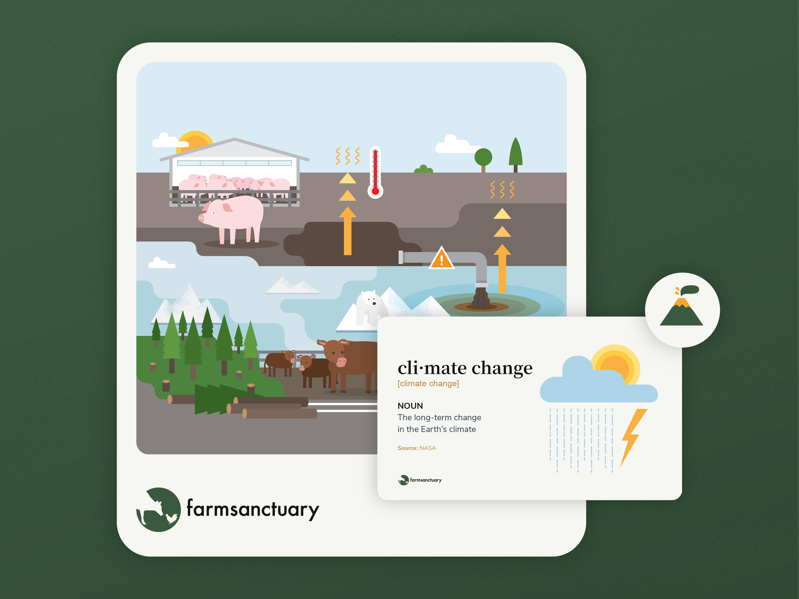

Farm Sanctuary
Farm Sanctuary is a U.S.-based nonprofit focused on animal protection. Working with the Humane Education Programs Manager and marketing team, I designed and illustrated the K-12 Humane Education curriculum covering lesson plans, student materials, teacher guides, and presentations across elementary, middle, and high school levels.

Challenge
The curriculum needed to meet U.S. educational standards while addressing sensitive topics like animal welfare, food systems, and environmental impact. It also had to work across a wide age range, from young children to teenagers, and be practical for educators in real classroom settings.


Approach
I developed a consistent visual language across all age groups. Illustration translated abstract or sensitive topics into clear, accessible visuals while supporting storytelling. Layouts were structured to help educators navigate and use the materials efficiently, focusing on readability, hierarchy, and ease of use.


Outcome
The curriculum has been used by educators across the U.S., reaching over 250,000 students. The program received the Excellence Award (2019) and the Educator's Choice Award (2024).